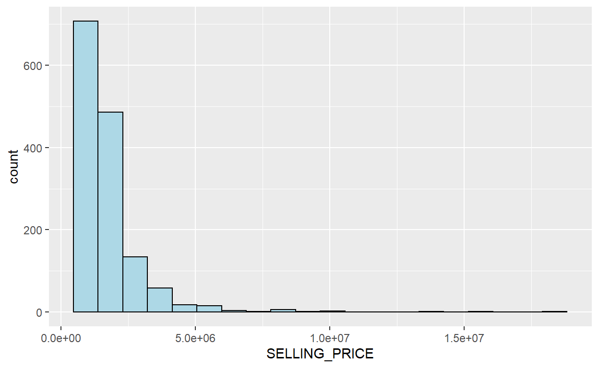
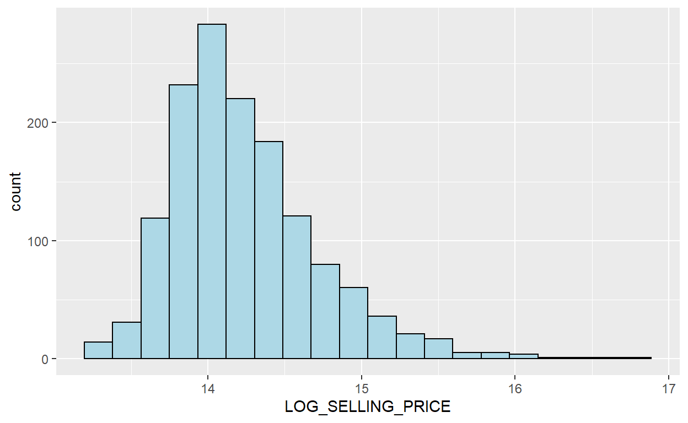
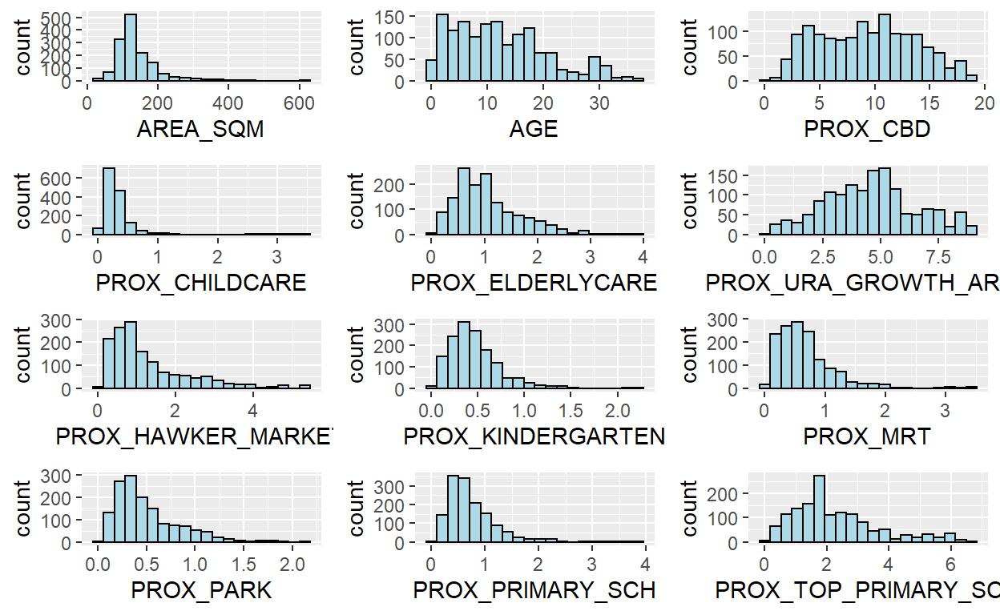
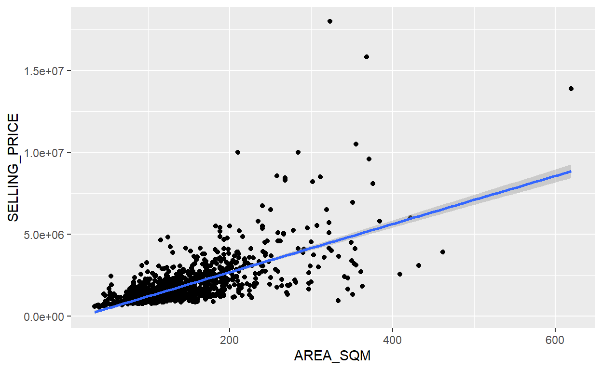
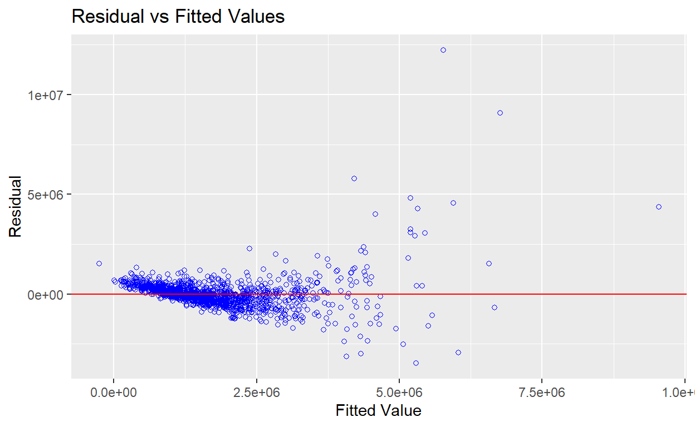

1 Overview
Geographically weighted regression (GWR) is a spatial statistical technique that takes non-stationary variables into consideration (e.g., climate; demographic factors; physical environment characteristics) and models the local relationships between these independent variables and an outcome of interest (also known as dependent variable).
In this hands-on exercise, I have learnt to build hedonic pricing models by using GWR methods. The dependent variable is the resale prices of condominium in 2015. The independent variables are divided into either structural and locational.
2 Data
Two data sets will be used in this model building exercise, they are:
- URA Master Plan subzone boundary in shapefile format (i.e. MP14_SUBZONE_WEB_PL)
- condo_resale_2015 in csv format (i.e. condo_resale_2015.csv)
3 Import packages
-Geospatial statistical modelling package: GWmodel -Spatial data handling: sf -Attribute data handling: tidyverse, especially readr, ggplot2 and dplyr -Choropleth mapping: tmap
packages = c('olsrr', 'corrplot', 'ggpubr', 'sf', 'spdep', 'GWmodel', 'tmap', 'tidyverse')
for (p in packages){
if(!require(p, character.only = T)){
install.packages(p)
}
library(p,character.only = T)
}
A short note about GWmodel
GWmodel package provides a collection of localised spatial statistical methods, namely: GW summary statistics, GW principal components analysis, GW discriminant analysis and various forms of GW regression; some of which are provided in basic and robust (outlier resistant) forms. Commonly, outputs or parameters of the GWmodel are mapped to provide a useful exploratory tool, which can often precede (and direct) a more traditional or sophisticated statistical analysis.
4 Geospatial Data Wrangling
4.1 Import geospatial data
- Import MP_SUBZONE_WEB_PL shapefile by using st_read() of sf packages.
mpsz = st_read(dsn = "data/geospatial", layer = "MP14_SUBZONE_WEB_PL")
Reading layer `MP14_SUBZONE_WEB_PL' from data source
`C:\wlwong2018\IS415 Blog\_posts\2021-10-16-hands-on-exercise-9\data\geospatial'
using driver `ESRI Shapefile'
Simple feature collection with 323 features and 15 fields
Geometry type: MULTIPOLYGON
Dimension: XY
Bounding box: xmin: 2667.538 ymin: 15748.72 xmax: 56396.44 ymax: 50256.33
Projected CRS: SVY21Results above show that:
- R object used to contain the imported MP14_SUBZONE_WEB_PL shapefile is called mpsz and it is a simple feature object.
- The geometry type is multipolygon.
- It is also important to note that mpsz simple feature object does not have EPSG information.
4.2 Update CRS information
- Update the newly imported mpsz with the correct ESPG code (i.e. 3414)
- Verify the newly transformed mpsz_svy21.
mpsz_svy21 <- st_transform(mpsz, 3414)
st_crs(mpsz_svy21)
Coordinate Reference System:
User input: EPSG:3414
wkt:
PROJCRS["SVY21 / Singapore TM",
BASEGEOGCRS["SVY21",
DATUM["SVY21",
ELLIPSOID["WGS 84",6378137,298.257223563,
LENGTHUNIT["metre",1]]],
PRIMEM["Greenwich",0,
ANGLEUNIT["degree",0.0174532925199433]],
ID["EPSG",4757]],
CONVERSION["Singapore Transverse Mercator",
METHOD["Transverse Mercator",
ID["EPSG",9807]],
PARAMETER["Latitude of natural origin",1.36666666666667,
ANGLEUNIT["degree",0.0174532925199433],
ID["EPSG",8801]],
PARAMETER["Longitude of natural origin",103.833333333333,
ANGLEUNIT["degree",0.0174532925199433],
ID["EPSG",8802]],
PARAMETER["Scale factor at natural origin",1,
SCALEUNIT["unity",1],
ID["EPSG",8805]],
PARAMETER["False easting",28001.642,
LENGTHUNIT["metre",1],
ID["EPSG",8806]],
PARAMETER["False northing",38744.572,
LENGTHUNIT["metre",1],
ID["EPSG",8807]]],
CS[Cartesian,2],
AXIS["northing (N)",north,
ORDER[1],
LENGTHUNIT["metre",1]],
AXIS["easting (E)",east,
ORDER[2],
LENGTHUNIT["metre",1]],
USAGE[
SCOPE["Cadastre, engineering survey, topographic mapping."],
AREA["Singapore - onshore and offshore."],
BBOX[1.13,103.59,1.47,104.07]],
ID["EPSG",3414]]4.3 reveal the extent of mpsz_svy21
- Use st_bbox() of sf package
st_bbox(mpsz_svy21)
xmin ymin xmax ymax
2667.538 15748.721 56396.440 50256.334 5 Aspatial Data Wrangling
5.1 Import the aspatial data
- Use read_csv() function of readr package to import condo_resale_2015 into R as a tibble data frame called condo_resale.
- use glimpse() to display the data structure
condo_resale <- read_csv("data/aspatial/Condo_resale_2015.csv")
glimpse(condo_resale)
Rows: 1,436
Columns: 23
$ LATITUDE <dbl> 1.287145, 1.328698, 1.313727, 1.308563,~
$ LONGITUDE <dbl> 103.7802, 103.8123, 103.7971, 103.8247,~
$ POSTCODE <dbl> 118635, 288420, 267833, 258380, 467169,~
$ SELLING_PRICE <dbl> 3000000, 3880000, 3325000, 4250000, 140~
$ AREA_SQM <dbl> 309, 290, 248, 127, 145, 139, 218, 141,~
$ AGE <dbl> 30, 32, 33, 7, 28, 22, 24, 24, 27, 31, ~
$ PROX_CBD <dbl> 7.941259, 6.609797, 6.898000, 4.038861,~
$ PROX_CHILDCARE <dbl> 0.16597932, 0.28027246, 0.42922669, 0.3~
$ PROX_ELDERLYCARE <dbl> 2.5198118, 1.9333338, 0.5021395, 1.9910~
$ PROX_URA_GROWTH_AREA <dbl> 6.618741, 7.505109, 6.463887, 4.906512,~
$ PROX_HAWKER_MARKET <dbl> 1.76542207, 0.54507614, 0.37789301, 1.6~
$ PROX_KINDERGARTEN <dbl> 0.05835552, 0.61592412, 0.14120309, 0.3~
$ PROX_MRT <dbl> 0.5607188, 0.6584461, 0.3053433, 0.6910~
$ PROX_PARK <dbl> 1.1710446, 0.1992269, 0.2779886, 0.9832~
$ PROX_PRIMARY_SCH <dbl> 1.6340256, 0.9747834, 1.4715016, 1.4546~
$ PROX_TOP_PRIMARY_SCH <dbl> 3.3273195, 0.9747834, 1.4715016, 2.3006~
$ PROX_SHOPPING_MALL <dbl> 2.2102717, 2.9374279, 1.2256850, 0.3525~
$ PROX_SUPERMARKET <dbl> 0.9103958, 0.5900617, 0.4135583, 0.4162~
$ PROX_BUS_STOP <dbl> 0.10336166, 0.28673408, 0.28504777, 0.2~
$ NO_Of_UNITS <dbl> 18, 20, 27, 30, 30, 31, 32, 32, 32, 32,~
$ FAMILY_FRIENDLY <dbl> 0, 0, 0, 0, 0, 1, 1, 0, 1, 1, 0, 0, 0, ~
$ FREEHOLD <dbl> 1, 1, 1, 1, 1, 1, 1, 1, 1, 0, 1, 1, 1, ~
$ LEASEHOLD_99YR <dbl> 0, 0, 0, 0, 0, 0, 0, 0, 0, 0, 0, 0, 0, ~- See the data in XCOORD column
head(condo_resale$LONGITUDE)
[1] 103.7802 103.8123 103.7971 103.8247 103.9505 103.9386- See the data in YCOORD column
head(condo_resale$LATITUDE)
[1] 1.287145 1.328698 1.313727 1.308563 1.321437 1.314198- See summary statsitics of condo_resale
summary(condo_resale)
LATITUDE LONGITUDE POSTCODE SELLING_PRICE
Min. :1.240 Min. :103.7 Min. : 18965 Min. : 540000
1st Qu.:1.309 1st Qu.:103.8 1st Qu.:259849 1st Qu.: 1100000
Median :1.328 Median :103.8 Median :469298 Median : 1383222
Mean :1.334 Mean :103.8 Mean :440439 Mean : 1751211
3rd Qu.:1.357 3rd Qu.:103.9 3rd Qu.:589486 3rd Qu.: 1950000
Max. :1.454 Max. :104.0 Max. :828833 Max. :18000000
AREA_SQM AGE PROX_CBD PROX_CHILDCARE
Min. : 34.0 Min. : 0.00 Min. : 0.3869 Min. :0.004927
1st Qu.:103.0 1st Qu.: 5.00 1st Qu.: 5.5574 1st Qu.:0.174481
Median :121.0 Median :11.00 Median : 9.3567 Median :0.258135
Mean :136.5 Mean :12.14 Mean : 9.3254 Mean :0.326313
3rd Qu.:156.0 3rd Qu.:18.00 3rd Qu.:12.6661 3rd Qu.:0.368293
Max. :619.0 Max. :37.00 Max. :19.1804 Max. :3.465726
PROX_ELDERLYCARE PROX_URA_GROWTH_AREA PROX_HAWKER_MARKET
Min. :0.05451 Min. :0.2145 Min. :0.05182
1st Qu.:0.61254 1st Qu.:3.1643 1st Qu.:0.55245
Median :0.94179 Median :4.6186 Median :0.90842
Mean :1.05351 Mean :4.5981 Mean :1.27987
3rd Qu.:1.35122 3rd Qu.:5.7550 3rd Qu.:1.68578
Max. :3.94916 Max. :9.1554 Max. :5.37435
PROX_KINDERGARTEN PROX_MRT PROX_PARK
Min. :0.004927 Min. :0.05278 Min. :0.02906
1st Qu.:0.276345 1st Qu.:0.34646 1st Qu.:0.26211
Median :0.413385 Median :0.57430 Median :0.39926
Mean :0.458903 Mean :0.67316 Mean :0.49802
3rd Qu.:0.578474 3rd Qu.:0.84844 3rd Qu.:0.65592
Max. :2.229045 Max. :3.48037 Max. :2.16105
PROX_PRIMARY_SCH PROX_TOP_PRIMARY_SCH PROX_SHOPPING_MALL
Min. :0.07711 Min. :0.07711 Min. :0.0000
1st Qu.:0.44024 1st Qu.:1.34451 1st Qu.:0.5258
Median :0.63505 Median :1.88213 Median :0.9357
Mean :0.75471 Mean :2.27347 Mean :1.0455
3rd Qu.:0.95104 3rd Qu.:2.90954 3rd Qu.:1.3994
Max. :3.92899 Max. :6.74819 Max. :3.4774
PROX_SUPERMARKET PROX_BUS_STOP NO_Of_UNITS
Min. :0.0000 Min. :0.001595 Min. : 18.0
1st Qu.:0.3695 1st Qu.:0.098356 1st Qu.: 188.8
Median :0.5687 Median :0.151710 Median : 360.0
Mean :0.6141 Mean :0.193974 Mean : 409.2
3rd Qu.:0.7862 3rd Qu.:0.220466 3rd Qu.: 590.0
Max. :2.2441 Max. :2.476639 Max. :1703.0
FAMILY_FRIENDLY FREEHOLD LEASEHOLD_99YR
Min. :0.0000 Min. :0.0000 Min. :0.0000
1st Qu.:0.0000 1st Qu.:0.0000 1st Qu.:0.0000
Median :0.0000 Median :0.0000 Median :0.0000
Mean :0.4868 Mean :0.4227 Mean :0.4882
3rd Qu.:1.0000 3rd Qu.:1.0000 3rd Qu.:1.0000
Max. :1.0000 Max. :1.0000 Max. :1.0000 5.2 Convert aspatial data frame into a sf object
- Use st_as_sf() of sf packages.
- st_transform() of sf package is used to convert the coordinates from wgs84 (i.e. crs:4326) to svy21 (i.e. crs=3414).
condo_resale.sf <- st_as_sf(condo_resale,
coords = c("LONGITUDE", "LATITUDE"),
crs=4326) %>%
st_transform(crs=3414)
head(condo_resale.sf)
Simple feature collection with 6 features and 21 fields
Geometry type: POINT
Dimension: XY
Bounding box: xmin: 22085.12 ymin: 29951.54 xmax: 41042.56 ymax: 34546.2
Projected CRS: SVY21 / Singapore TM
# A tibble: 6 x 22
POSTCODE SELLING_PRICE AREA_SQM AGE PROX_CBD PROX_CHILDCARE
<dbl> <dbl> <dbl> <dbl> <dbl> <dbl>
1 118635 3000000 309 30 7.94 0.166
2 288420 3880000 290 32 6.61 0.280
3 267833 3325000 248 33 6.90 0.429
4 258380 4250000 127 7 4.04 0.395
5 467169 1400000 145 28 11.8 0.119
6 466472 1320000 139 22 10.3 0.125
# ... with 16 more variables: PROX_ELDERLYCARE <dbl>,
# PROX_URA_GROWTH_AREA <dbl>, PROX_HAWKER_MARKET <dbl>,
# PROX_KINDERGARTEN <dbl>, PROX_MRT <dbl>, PROX_PARK <dbl>,
# PROX_PRIMARY_SCH <dbl>, PROX_TOP_PRIMARY_SCH <dbl>,
# PROX_SHOPPING_MALL <dbl>, PROX_SUPERMARKET <dbl>,
# PROX_BUS_STOP <dbl>, NO_Of_UNITS <dbl>, FAMILY_FRIENDLY <dbl>,
# FREEHOLD <dbl>, LEASEHOLD_99YR <dbl>, geometry <POINT [m]>6 Exploratory Data Analysis
6.1 EDA using statistical graphics
6.1.1 Plot distribution
- Plot the distribution of SELLING_PRICE by using appropriate Exploratory Data Analysis (EDA)
ggplot(data=condo_resale.sf, aes(x=`SELLING_PRICE`)) +
geom_histogram(bins=20, color="black", fill="light blue")

Results above show that:
- Reveals a right skewed distribution. This means that more condominium units were transacted at relative lower prices.
6.1.2 Normalise using Log Transformation
- Statistically, the skewed distribution can be normalised by using log transformation.
- Use to derive a new variable called LOG_SELLING_PRICE by using a log transformation on the variable SELLING_PRICE.
- It is performed using mutate() of dplyr package.
condo_resale.sf <- condo_resale.sf %>%
mutate(`LOG_SELLING_PRICE` = log(SELLING_PRICE))
6.1.3 Plot LOG_SELLING_PRICE
ggplot(data=condo_resale.sf, aes(x=`LOG_SELLING_PRICE`)) +
geom_histogram(bins=20, color="black", fill="light blue")

Notice that the distribution is relatively less skewed after the transformation.
6.2 Multiple Histogram Plots distribution of variables
- The code chunk below is used to create 12 histograms.
- ggarrnage() of ggpubr package is used to organised these histogram into a 3 columns by 4 rows small multiple plot.
AREA_SQM <- ggplot(data=condo_resale.sf, aes(x= `AREA_SQM`)) +
geom_histogram(bins=20, color="black", fill="light blue")
AGE <- ggplot(data=condo_resale.sf, aes(x= `AGE`)) +
geom_histogram(bins=20, color="black", fill="light blue")
PROX_CBD <- ggplot(data=condo_resale.sf, aes(x= `PROX_CBD`)) +
geom_histogram(bins=20, color="black", fill="light blue")
PROX_CHILDCARE <- ggplot(data=condo_resale.sf, aes(x= `PROX_CHILDCARE`)) +
geom_histogram(bins=20, color="black", fill="light blue")
PROX_ELDERLYCARE <- ggplot(data=condo_resale.sf, aes(x= `PROX_ELDERLYCARE`)) +
geom_histogram(bins=20, color="black", fill="light blue")
PROX_URA_GROWTH_AREA <- ggplot(data=condo_resale.sf, aes(x= `PROX_URA_GROWTH_AREA`)) +
geom_histogram(bins=20, color="black", fill="light blue")
PROX_HAWKER_MARKET <- ggplot(data=condo_resale.sf, aes(x= `PROX_HAWKER_MARKET`)) +
geom_histogram(bins=20, color="black", fill="light blue")
PROX_KINDERGARTEN <- ggplot(data=condo_resale.sf, aes(x= `PROX_KINDERGARTEN`)) +
geom_histogram(bins=20, color="black", fill="light blue")
PROX_MRT <- ggplot(data=condo_resale.sf, aes(x= `PROX_MRT`)) +
geom_histogram(bins=20, color="black", fill="light blue")
PROX_PARK <- ggplot(data=condo_resale.sf, aes(x= `PROX_PARK`)) +
geom_histogram(bins=20, color="black", fill="light blue")
PROX_PRIMARY_SCH <- ggplot(data=condo_resale.sf, aes(x= `PROX_PRIMARY_SCH`)) +
geom_histogram(bins=20, color="black", fill="light blue")
PROX_TOP_PRIMARY_SCH <- ggplot(data=condo_resale.sf, aes(x= `PROX_TOP_PRIMARY_SCH`)) +
geom_histogram(bins=20, color="black", fill="light blue")
ggarrange(AREA_SQM, AGE, PROX_CBD, PROX_CHILDCARE, PROX_ELDERLYCARE, PROX_URA_GROWTH_AREA, PROX_HAWKER_MARKET, PROX_KINDERGARTEN, PROX_MRT, PROX_PARK, PROX_PRIMARY_SCH, PROX_TOP_PRIMARY_SCH, ncol = 3, nrow = 4)

6.3 Drawing Statistical Point Map
Reveal the geospatial distribution condominium resale prices in Singapore. The map will be prepared by using tmap package.
tmap_mode(“view”) to use the interactive mode of tmap
Then, create an interactive point symbol map
tm_dots() is used instead of tm_bubbles()
- set.zoom.limits argument of tm_view() sets the minimum and maximum zoom level to 11 and 14 respectively.
Lastly, tmap_mode(“plot”) to display plot mode
Note: Display as plot mode for now
tmap_mode("plot")
tm_shape(mpsz_svy21)+
tm_polygons() +
tm_shape(condo_resale.sf) +
tm_dots(col = "SELLING_PRICE",
alpha = 0.6,
style="quantile") +
tm_view(set.zoom.limits = c(11,14))
tmap_mode("plot")
7 Hedonic Pricing Modelling in R
7.1 Simple Linear Regression Method
7.1.1 Build Simple Linear Regression model
- Build a simple linear regression model by using SELLING_PRICE as the dependent variable and AREA_SQM as the independent variable.
- lm() returns an object of class “lm” or for multiple responses of class c(“mlm”, “lm”).
condo.slr <- lm(formula=SELLING_PRICE ~ AREA_SQM, data = condo_resale.sf)
7.1.2 Show statistical summary
- summary() and anova() can be used to obtain and print a summary and analysis of variance table of the results.
- The generic accessor functions coefficients, effects, fitted.values and residuals extract various useful features of the value returned by lm.
summary(condo.slr)
Call:
lm(formula = SELLING_PRICE ~ AREA_SQM, data = condo_resale.sf)
Residuals:
Min 1Q Median 3Q Max
-3695815 -391764 -87517 258900 13503875
Coefficients:
Estimate Std. Error t value Pr(>|t|)
(Intercept) -258121.1 63517.2 -4.064 5.09e-05 ***
AREA_SQM 14719.0 428.1 34.381 < 2e-16 ***
---
Signif. codes: 0 '***' 0.001 '**' 0.01 '*' 0.05 '.' 0.1 ' ' 1
Residual standard error: 942700 on 1434 degrees of freedom
Multiple R-squared: 0.4518, Adjusted R-squared: 0.4515
F-statistic: 1182 on 1 and 1434 DF, p-value: < 2.2e-16Results above show that:
SELLING_PRICE can be explained by using the formula:
*y = -258121.1 + 14719x1*R-squared of 0.4518 reveals that the simple regression model built is able to explain about 45% of the resale prices.
Since p-value is much smaller than 0.0001, we will reject the null hypothesis that mean is a good estimator of SELLING_PRICE. This will allow us to infer that simple linear regression model above is a good estimator of SELLING_PRICE.
The Coefficients: section of the report reveals that the p-values of both the estimates of the Intercept and ARA_SQ88M are smaller than 0.001. In v88iew of this, the null hypothesis of the B0 and B1 are equal to 0 will be rejected. As a result, we will be able to infer that the B0 and B1 are good parameter estimates.
7.1.3 Visualise best fit curve
- To visualise the best fit curve on a scatterplot, we can incorporate lm() as a method function in ggplot’s geometry
ggplot(data=condo_resale.sf,
aes(x=`AREA_SQM`, y=`SELLING_PRICE`)) +
geom_point() +
geom_smooth(method = lm)

7.2 Multiple Linear Regression Method
7.2.1 Visualise the relationships of the independent variables
Ensure that the independent variables used are not highly correlated to each other. If these highly correlated independent variables are used in building a regression model by mistake, the quality of the model will be compromised. This phenomenon is known as multicollinearity in statistics.
Correlation matrix is commonly used to visualise the relationships between the independent variables. Beside the pairs() of R, there are many packages that support the display of a correlation matrix. In this section, the corrplot package will be used.
- To plot a scatterplot matrix of the relationship between the independent variables in condo_resale data.frame.
- Matrix reorder is very important for mining the hiden structure and patter in the matrix. There are four methods in corrplot (parameter order), namely “AOE”, “FPC”, “hclust”, “alphabet”. Alphabet order is used, it orders the variables alphabetically.
corrplot(cor(condo_resale[, 5:23]), diag = FALSE, order = "AOE",
tl.pos = "td", tl.cex = 0.5, method = "number", type = "upper")
Results above show that:
- Freehold is highly correlated to LEASE_99YEAR. In view of this, it is wiser to only include either one of them in the subsequent model building. As a result, LEASE_99YEAR is excluded in the subsequent model building.
7.2.2 Build a hedonic pricing model using multiple linear regression method
7.2.2.1 Calibrate the multiple linear regression model
- Use lm() to calibrate the multiple linear regression model.
condo.mlr <- lm(formula = SELLING_PRICE ~ AREA_SQM + AGE + PROX_CBD + PROX_CHILDCARE + PROX_ELDERLYCARE + PROX_URA_GROWTH_AREA + PROX_HAWKER_MARKET + PROX_KINDERGARTEN + PROX_MRT + PROX_PARK + PROX_PRIMARY_SCH + PROX_TOP_PRIMARY_SCH + PROX_SHOPPING_MALL + PROX_SUPERMARKET + PROX_BUS_STOP + NO_Of_UNITS + FAMILY_FRIENDLY + FREEHOLD, data=condo_resale.sf)
summary(condo.mlr)
Call:
lm(formula = SELLING_PRICE ~ AREA_SQM + AGE + PROX_CBD + PROX_CHILDCARE +
PROX_ELDERLYCARE + PROX_URA_GROWTH_AREA + PROX_HAWKER_MARKET +
PROX_KINDERGARTEN + PROX_MRT + PROX_PARK + PROX_PRIMARY_SCH +
PROX_TOP_PRIMARY_SCH + PROX_SHOPPING_MALL + PROX_SUPERMARKET +
PROX_BUS_STOP + NO_Of_UNITS + FAMILY_FRIENDLY + FREEHOLD,
data = condo_resale.sf)
Residuals:
Min 1Q Median 3Q Max
-3475964 -293923 -23069 241043 12260381
Coefficients:
Estimate Std. Error t value Pr(>|t|)
(Intercept) 481728.40 121441.01 3.967 7.65e-05 ***
AREA_SQM 12708.32 369.59 34.385 < 2e-16 ***
AGE -24440.82 2763.16 -8.845 < 2e-16 ***
PROX_CBD -78669.78 6768.97 -11.622 < 2e-16 ***
PROX_CHILDCARE -351617.91 109467.25 -3.212 0.00135 **
PROX_ELDERLYCARE 171029.42 42110.51 4.061 5.14e-05 ***
PROX_URA_GROWTH_AREA 38474.53 12523.57 3.072 0.00217 **
PROX_HAWKER_MARKET 23746.10 29299.76 0.810 0.41782
PROX_KINDERGARTEN 147468.99 82668.87 1.784 0.07466 .
PROX_MRT -314599.68 57947.44 -5.429 6.66e-08 ***
PROX_PARK 563280.50 66551.68 8.464 < 2e-16 ***
PROX_PRIMARY_SCH 180186.08 65237.95 2.762 0.00582 **
PROX_TOP_PRIMARY_SCH 2280.04 20410.43 0.112 0.91107
PROX_SHOPPING_MALL -206604.06 42840.60 -4.823 1.57e-06 ***
PROX_SUPERMARKET -44991.80 77082.64 -0.584 0.55953
PROX_BUS_STOP 683121.35 138353.28 4.938 8.85e-07 ***
NO_Of_UNITS -231.18 89.03 -2.597 0.00951 **
FAMILY_FRIENDLY 140340.77 47020.55 2.985 0.00289 **
FREEHOLD 359913.01 49220.22 7.312 4.38e-13 ***
---
Signif. codes: 0 '***' 0.001 '**' 0.01 '*' 0.05 '.' 0.1 ' ' 1
Residual standard error: 755800 on 1417 degrees of freedom
Multiple R-squared: 0.6518, Adjusted R-squared: 0.6474
F-statistic: 147.4 on 18 and 1417 DF, p-value: < 2.2e-16Results above show that:
- Not all the indepent variables are statistically significant. We will revised the model by removing those variables which are not statistically significant.
7.2.2.2 Calibrate the revised model
condo.mlr1 <- lm(formula = SELLING_PRICE ~ AREA_SQM + AGE + PROX_CBD + PROX_CHILDCARE + PROX_ELDERLYCARE + PROX_URA_GROWTH_AREA + PROX_MRT + PROX_PARK + PROX_PRIMARY_SCH + PROX_SHOPPING_MALL + PROX_BUS_STOP + NO_Of_UNITS + FAMILY_FRIENDLY + FREEHOLD, data=condo_resale.sf)
ols_regress(condo.mlr1)
Model Summary
------------------------------------------------------------------------
R 0.807 RMSE 755957.289
R-Squared 0.651 Coef. Var 43.168
Adj. R-Squared 0.647 MSE 571471422208.591
Pred R-Squared 0.638 MAE 414819.628
------------------------------------------------------------------------
RMSE: Root Mean Square Error
MSE: Mean Square Error
MAE: Mean Absolute Error
ANOVA
--------------------------------------------------------------------------------
Sum of
Squares DF Mean Square F Sig.
--------------------------------------------------------------------------------
Regression 1.512586e+15 14 1.080418e+14 189.059 0.0000
Residual 8.120609e+14 1421 571471422208.591
Total 2.324647e+15 1435
--------------------------------------------------------------------------------
Parameter Estimates
-----------------------------------------------------------------------------------------------------------------
model Beta Std. Error Std. Beta t Sig lower upper
-----------------------------------------------------------------------------------------------------------------
(Intercept) 527633.222 108183.223 4.877 0.000 315417.244 739849.200
AREA_SQM 12777.523 367.479 0.584 34.771 0.000 12056.663 13498.382
AGE -24687.739 2754.845 -0.167 -8.962 0.000 -30091.739 -19283.740
PROX_CBD -77131.323 5763.125 -0.263 -13.384 0.000 -88436.469 -65826.176
PROX_CHILDCARE -318472.751 107959.512 -0.084 -2.950 0.003 -530249.889 -106695.613
PROX_ELDERLYCARE 185575.623 39901.864 0.090 4.651 0.000 107302.737 263848.510
PROX_URA_GROWTH_AREA 39163.254 11754.829 0.060 3.332 0.001 16104.571 62221.936
PROX_MRT -294745.107 56916.367 -0.112 -5.179 0.000 -406394.234 -183095.980
PROX_PARK 570504.807 65507.029 0.150 8.709 0.000 442003.938 699005.677
PROX_PRIMARY_SCH 159856.136 60234.599 0.062 2.654 0.008 41697.849 278014.424
PROX_SHOPPING_MALL -220947.251 36561.832 -0.115 -6.043 0.000 -292668.213 -149226.288
PROX_BUS_STOP 682482.221 134513.243 0.134 5.074 0.000 418616.359 946348.082
NO_Of_UNITS -245.480 87.947 -0.053 -2.791 0.005 -418.000 -72.961
FAMILY_FRIENDLY 146307.576 46893.021 0.057 3.120 0.002 54320.593 238294.560
FREEHOLD 350599.812 48506.485 0.136 7.228 0.000 255447.802 445751.821
-----------------------------------------------------------------------------------------------------------------7.2.3 Check for multicolinearity
olsrr provides a collection of very useful methods for building better multiple linear regression models:
- comprehensive regression output
- residual diagnostics
- measures of influence
- heteroskedasticity tests
- collinearity diagnostics
- model fit assessment
- variable contribution assessment
- variable selection procedures
the ols_vif_tol() of olsrr package is used to test if there are sign of multicollinearity.
ols_vif_tol(condo.mlr1)
Variables Tolerance VIF
1 AREA_SQM 0.8728554 1.145665
2 AGE 0.7071275 1.414172
3 PROX_CBD 0.6356147 1.573280
4 PROX_CHILDCARE 0.3066019 3.261559
5 PROX_ELDERLYCARE 0.6598479 1.515501
6 PROX_URA_GROWTH_AREA 0.7510311 1.331503
7 PROX_MRT 0.5236090 1.909822
8 PROX_PARK 0.8279261 1.207837
9 PROX_PRIMARY_SCH 0.4524628 2.210126
10 PROX_SHOPPING_MALL 0.6738795 1.483945
11 PROX_BUS_STOP 0.3514118 2.845664
12 NO_Of_UNITS 0.6901036 1.449058
13 FAMILY_FRIENDLY 0.7244157 1.380423
14 FREEHOLD 0.6931163 1.442759Results above show that:
- conclude that there are no sign of multicollinearity among the independent variables since the VIF of the independent variables are less than 10
7.2.4 Test for Non-Linearity
- In multiple linear regression, it is important for us to test the assumption that linearity and additivity of the relationship between dependent and independent variables.
- Use ols_plot_resid_fit() of olsrr package is used to perform linearity assumption test.
ols_plot_resid_fit(condo.mlr1)

Results above show that:
- Most of the data points are scattered around the 0 line, hence we can safely conclude that the relationships between the dependent variable and independent variables are linear.
7.2.5 Test for Normality Assumption
- Use ols_plot_resid_hist() of olsrr package to perform normality assumption test.
ols_plot_resid_hist(condo.mlr1)

Results above show that:
- Reveals that the residual of the multiple linear regression model (i.e. condo.mlr1) is resemble normal distribution.
For formal statistical test methods, the ols_test_normality() of olsrr package can be used as well,
ols_test_normality(condo.mlr1)
-----------------------------------------------
Test Statistic pvalue
-----------------------------------------------
Shapiro-Wilk 0.6856 0.0000
Kolmogorov-Smirnov 0.1366 0.0000
Cramer-von Mises 121.0768 0.0000
Anderson-Darling 67.9551 0.0000
-----------------------------------------------Results above show that:
- p-values of the four tests are way smaller than the alpha value of 0.05. Hence we will reject the null hypothesis that the residual is NOT resemble normal distribution.